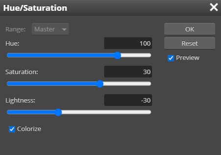

Giving ourselves a tail gives us a great opportunity to learn about
perspective and shearing in Photopea.
-
Click the New Layer button at the bottom of the layers panel...
Make sure the new layer is at the top of the Layer's panel...

-
Rename the new empty layer Tail...
-
Make sure the Tail layer is selected
-
Hide the layers with your person on them by
clicking the visibility icons next to each layer thumbnail...
-
Click the Rectangle Select Tool...
We need to figure out a good width to make our tail. If it is too wide or too
thin, it will look out of place (imagine a rat's tail on an alligator, or vice
versa). We want our tail to be in proportion to the rest of our head. Remember
way back on Step 1 when I gave you some pointers on the image you should use?
Well, this step is why I took the time to give you those pointers. I can't
tell you exactly how big to make your tail because the size of everyone's head
in their image is different. Here are some suggestions that should help you
create a nice looking tail.
If your head occupies most of the width of your image, like with the image
that I'm using for these instructions, then you generally want your tail to be
100 pixels wide (this is assuming that you resized your image to
1000 pixels wide in Step 1). However, if your head is
actually small compared to the overall width of the image, like in this
picture...
That's NASA astronaut Jessica Meir...did she encounter aliens
in space? We may never know...she doesn't talk about it...which is suspicious...
Then using the entire width of the image will give us a tail that is much too
wide. Luckily, we have a nice reference point within our image that we can use
as a starting point to create our tail.
-
If your head occupies most of your image like mine (if not, go to the next
direction), then click and drag to create a rectangle that stretches from the top
of the image all the way to the
bottom and is 100 pixels wide - you can tell how wide your selection is
by looking at the black information box that displays along side your selection...
The W indicates how wide the selection you are creating is (the H indicates
the height), which is this case is a box
that is 100 pixels wide (note that is doesn't matter if the width of the
rectangle is exactly 100 pixels - we are going to distort our rectangle in
just a moment so the width doesn't have to be perfect)
-
If your head is like the image of Jessica above, turn the visibility of the
Alien layer back on and then click and drag to create a rectangle that
stretches from the top of the image all the way to the bottom and is
approximately the same width as your eye...
-
Press D on the keyboard to reset the Foreground and Background colors to the
default black and white
- Press X on the keyboard to swap the colors - we want white in the Foreground
and black in the Background...
- Click the Gradient Tool...
- Set the Gradient Tool options bar to match the image below...
Make especially sure you have the following settings:
- Gradient is
set to Foreground to Background
- Gradient type is set to Reflected
- Opacity is set to 100%
- Reverse is NOT checked
- Zoom in on your selection...
- Press and hold the Shift key and click the center of your selection box and
then drag to the right edge of the selection box...
- Release the mouse button - you should now see the gradient in your selection box...
Holding the Shift key as you drag ensures that the gradient will be applied
evenly across the entire selection. Make sure your gradient is applied
vertically as in the above direction. In other words, the white line should be
going up and down like the image above and not left and right, like this...
This is WRONG!
The above image makes no sense and will create an unusable tail (the white
part is supposed to be light reflecting off the length of the tail).
Additionally, make sure that the center white line of the gradient sits in the
center of the rectangle, and that you don't have something like this...
While this will work okay for what we are doing, it will look out of place
and make your tail stick out instead of blending in.
If your gradient is wrong, simply reapply it - you don't even have to undo
because the new gradient will overwrite the old.
Once your gradient is in place and looks like it is supposed to, we need to give our tail a point and a nice curvature
(and learn two new tools
along the way).
-
With the tail still selected, click Edit then point at Transform and click Perspective...
Notice that your selection now includes resize handles...
-
Drag one of the top corner resize handles in so that it sits
on top of the middle handle (the other corner handle should move automatically)...
The top of your selection should now come to a point
The Perspective tool allows us to adjust the angle of a selection so that it
looks like part of it is sitting closer (or farther away) form us than other
parts. It also works great for moving two sides of a selection at the same time,
which is why we used it here.
-
Press Enter to apply the transformation
-
Press Ctrl+D to deselect - you should now have something like this...
Take a second now to make sure that the tail you have created so far looks
good. A common problem students have at this point is that the colors are
reversed (meaning they have white along the sides and black in the middle). If
you have that issue, take the time now to undo your creation and fix your
colors.
When your tail looks like the image above, keep going.
- Click Filter then point at Distort and click Shear...
This will open the Shear window...
- Adjust the line so that it looks similar to the above image - note that
if you move the Shear window to the side you will be able to see the impact
your changes to the line are having on your tail
Notice that each time you click on the line that you will create a new
adjustment point, which creates a new curve. We could create more curves if we
wish, but it turns out that the more curves you add the less realistic your
tail looks, so let's just go with 2 curves.
- Click OK - you should now have a nice, curvy tail...
Next, we need to turn our tail green to match our current skin tone.
-
Turn on the visibility of your alien head layer - we will need to be able to
see our head so that we can match the color of the tail to the color of our
skin
-
Make sure the tail layer is still selected
-
Click Image and then point at Adjustments and click Hue/Saturation
-
Adjust the settings so they match the image below...

Be sure Colorize is checked or your changes will not take effect
-
Use the above settings as a starting point and drag the sliders to adjust your
color until it matches the color on your face - I
can't tell you what settings to use as the final numbers will be different for
everyone because everyone's picture is different, you'll just have to experiment with the sliders until you get
something that matches your skin
-
When your tail color approximates your skin color, click OK
-
Click Edit then click Free Transform and then rotate, resize, and reposition
your tail as needed so that it looks like it goes on your character...
Again, this is one of those times that I can't tell you exactly what to do
because we all have different images - just put your tail in a place where
you think it looks good, but make sure that the fat end of your tail is
sitting over your body in some way so that we can make it look like it is an
extension of your body in the next direction
-
Use the Eraser Tool to remove the lower portion of your tail so that it
appears to be coming from behind your character...
-
Save your work in your Alien folder
Our final task is to fix any distortions that growing our head may
have caused to our background.